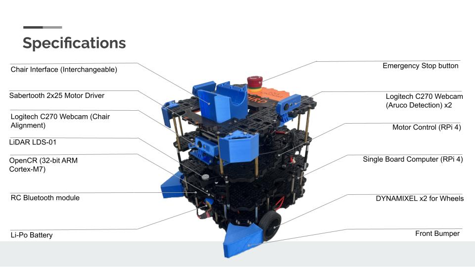

Problem
• High volume of chairs in new SIT (Singapore Institute of Technology) Punggol campus library (estimated 3000)
• Limited amount of manpower (estimated 8-9)
Problem statement
• How might we efficiently organise the large number of chairs in the campus library during closing time without requiring manual manpower?
Initial Concept
Gazebo Simulation
MVP (Minimal Viable Product) Specifications
Camera Configuration
Multi camera configuration, working with two camera streams to apply OpenCV for aruco detection